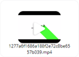
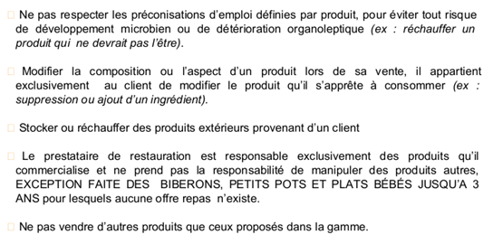
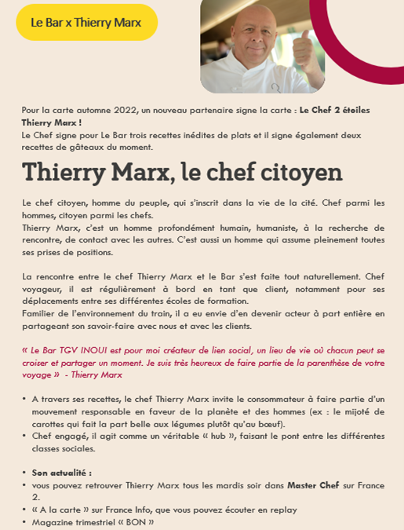
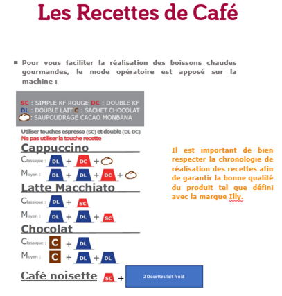
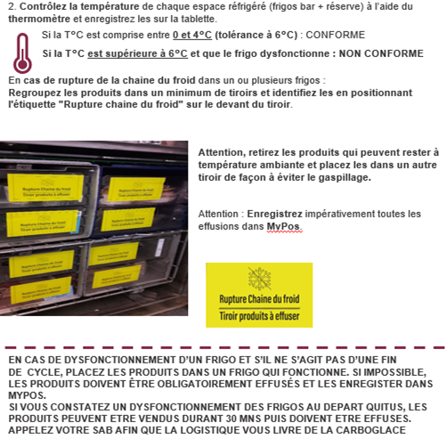
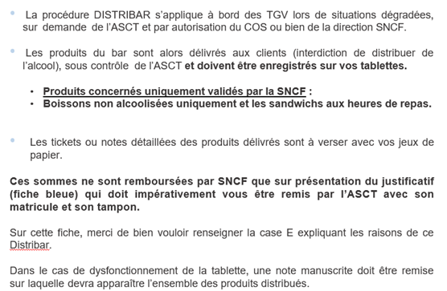
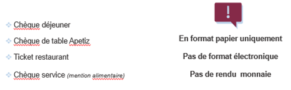
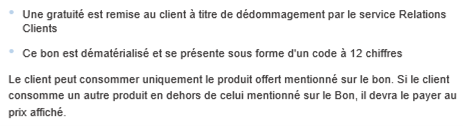
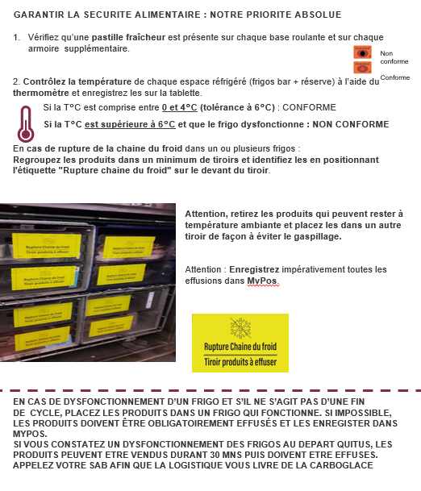
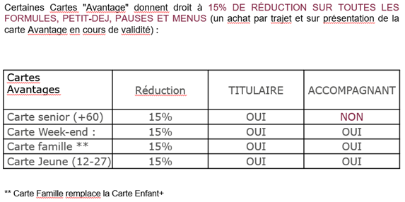

FIFO (First In First Out) = Premier Entré – Premier Sorti. En pratique cela veut dire qu’il faut vendre les produits en DLC courte en premier.
Attention : lorsque que vous recevez un C2, vérifier aussitôt les dates car Facilit’Rail réutilise les DLC du jour en priorité pour les C2.
Le merchandising est une technique de mise en avant des produits.
Pour qu’il soit efficace, il doit :
Et ainsi vous permettre de développer le nombre de produits par ticket.
Attention Obligation légale : séparer les alcools des boissons sans alcool.
Pensez à adapter votre plan de Merchandising en fonction des créneaux horaires.
Attention vous ne devez rien mettre devant le défibrillateur.
Pour plus d’informations, il existe le guide du merchandising sur myLink → la box → document de bord → guide merchandising. Vous y retrouverez plein de conseils ainsi que des photos pour vous donner des idées.
Vous pouvez également retrouver sur myLink → la box → vidéo formation → épisode → visionner la vidéo "épisode 2" (5ème position et vert fluo).


La synchronisation à l’ouverture de la tablette permet d’être certain que toutes les dernières informations sont à jour, que ce soit sur MyPos ou sur MyWay.
La tablette est synchronisée quand tous les voyants de la page d’identification sont verts.
Lorsque nous sommes en situation normale (donc pas de sur-résarvations, de trains supprimés, de gros retards... qui feraient que certains clients n'ont pas de place attitrée), l'ASCT annonce que les places en voiture bar sont avant tout réservées aux clients du bar. S'il ne fait pas cette annonce, vous pouvez lui demander de le faire si vous constatez que vos clients ne peuvent pas s'asseoir et que cela pose problème (les clients râlent, te prennent à parti...).
En principe, les contrôleurs ont cette même information.
Vous pouvez également positionner des PLV spécifiques sur les tables (à 300km, mieux vaut être assis pour boire son café.) en particulier sur les rames océane.
Dans l’idéal oui, le client est prioritaire. Si cela est impossible, inviter le à consulter la carte pour patienter.

Une carte et des pratiques engagées :
Vous pouvez commander un Uber que de 00h20 jusqu’à 6h du matin.
Vous pouvez retrouver tous les numéros de téléphone des SAB et les numéros pour faire des C2 sur myLink → la box → document de bord → les essentiels du commercial de bord septembre 2022 en page 4.
Pour savoir ce que votre C1 comporte, vous devez aller sur MyWay → enregistrer son matricule → choisir ‘feuille de route’ → visualiser la date concernée et appuyer sur le bordereau concerné.
Vous pouvez les retrouver sur myLink → la box → document de bord → bon C2 tgv.
Vous devez contacter le SAB de Paris Montparnasse : 01 81 70 76 61 et UNIQUEMENT pour un re complétement C2 : 06 03 22 40 60
Vous pouvez également aller sur myLink → la box → vidéo formation → vidéo formation j&j → visionner la vidéo 1 « le rôle de l’agent 2 ».
Ainsi que dans le fichier « épisode » → visionner la vidéo "épisode 4" (2ème position et violet). 
Vous devez ouvrir une course supplémentaire → choisir la position ‘1’ si le bar est en voiture 4 ou ‘11’ si le bar est en voiture 14 → s’enregistrer en service ‘VAP/BP’ → ne pas oublier d’appuyer sur vente en ligne et de mettre à jour collecte au bar et livraison à la place.
Il est primordial de patienter à l’ouverture pour que tous les voyants soient verts. En effet la tablette charge de nombreuses données : les courses, les promotions, les fichiers utilisateurs…
Vous pouvez appuyer sur la touche ‘sync’ pour relancer la synchronisation.
La limite est 2h15.
A noter : Les annonces doivent être celles validées par la SNCF et celles disponibles dans MyWay.
Vous pouvez également aller sur my link → la box → vidéo formation → épisode → visionner la vidéo "épisode 3" (3ème position et orange).
Pour savoir ce que fait votre train ensuite, vous devez aller sur MyWay → enregistrer son matricule → choisir ‘feuille de route’ → visualiser la date concernée et le trajet aller va apparaitre dans ‘étapes’.
Vous avez la liste des différentes fonctions effectuer par le train qui s’affiche. Il y est mentionné si le train est en ta/td ainsi que s’il y a un C1.
Vous devez avoir:
- TPE + Tablette
-Thermomètre
- Trousse de secours
- Clé Bar et clé carrée
- Masque et gel hydroalcoolique
- Gants (les rouges et les bleus)
- Bande Velcro
- Chevalet de la carte Bar
- Affiche A4 de l’animation en cours
- Ardoise pour mettre en avant nos options
- Pince/spatule/décapsuleur
- Sticker HS, rupture produit, etc
- Document C2
- Déclaration de vol
- Facturier
Vous pouvez retrouvez ces informations sur myLink → la box → document de bord → les essentiels du commercial de bord septembre 2022 en page 6.
J’essaye d’identifier si :
Vérifier que l'interrupteur 'four/trolley' situer à proximité du grill est bien sur la position 'four'. Si cela ne change rien, vous devez contacter votre SAB et faire un signalement au contrôleur.
La position 'trolley' permet l'alimentation de la prise de courant situer juste à côté.

Vous devez mettre des cadenas quand il n’y a aucune action logistique à réaliser (ni fin de cycle ni TA/TD).
Vous devez cadenasser en priorité les vivres frais, les alcools et les softs.

Attention : ce produit est à manipuler avec précaution. Utilisation de gants obligatoire.
Il est dangereux de déchirer l'emballage et de toucher à main nue la carboglace sous peine de brulure sérieuse.
Oui car il permet de mettre en évidence les animations qui sont obligatoires. Ces animations peuvent avoir un objectif d’image et /ou commerciale.
Durant votre service, si vous avez le moindre doute sur le fonctionnement des frigos vous pouvez prendre la température à cœur d’un produit.


Celui-ci est valable 2mois.
Elle désigne les produits à DLC courte, je dois donc les vendre en priorité.
Vous devez faire de la vente additionnelle. Pour cela vous pouvez proposer des formules, des options et /ou proposer un produit supplémentaire.
Vous pouvez vous aidez sur myLink → la box → document de bord → du guide des essentiels du commercial de bords page 24.
Vous pouvez également aller sur myLink → la box → vidéo formation → vidéo formation j&j → visionner la vidéo 6 « la force des mots ».
En effet, vous pouvez utiliser les mots suivant :
Par contre, vous devez éviter les mots :
Vous pouvez également aller sur myLink → la box → vidéo formation → vidéo formation j&j → visionner la vidéo 6 « la force des mots ».
Dans tous les cas cela représente une opportunité de développer le CA et d’atteindre les objectifs.
Il lui suffit de flasher le QR code présent sur la tablette de son siège pour accéder directement au site de la CEL.
Si la CEL a été validé via la gestion des CEL, c'est normal car ce n’est pas le même outil et sera intégrée dans le CA le lendemain.
Vous pouvez retrouver toutes ces informations sur myLink → la box → document de bord → mode opératoire de la CEL.
Il existe 2 autres possibilités pour accéder aux commandes :
Vous pouvez retrouver toute ces informations sur myLink → la box → document de bord → mode opératoire de la CEL.
C'est normal. C’est sûrement parce qu’il y a des tickets « effuser », « rupture », « boisson agents », etc. qui ont déjà été enregistré avant la première vente.
Si cela arrive c’est parce qu’un autre agent s’est trompé dans l’enregistrement de sa course.
Il s’est enregistré sur la même course que vous mais en principe la fin de service, le journal de caisse et donc votre intéressement ne tiendrons compte que de vos propres ventes.

Uniquement le dollars American et le franc suisse et uniquement en billet.
Pour les enregistrer, vous devez appuyer sur « espèce, rendu monnaie en devise » → choisir la devise concernée.
La tablette vous indique alors le montant dû dans la devise, il vous suffit ensuite de noter le montant reçu et la tablette vous indique dans la devise et en euros le montant du rendu monnaie.

Pour l’enregistrer, Vous devez aller dans autres → voucher → clavier (enregistrement du code à 12 chiffres) .
Il est remis par le contrôleur au client dans des cas particulier (pas de clim ou de chauffage dans une voiture). Il permet au client de bénéficier gratuitement d’une boisson parmi celle disponible sur le bon.
Pour l’enregistrer, il faut aller dans autres → voucher → voucher existant et choisir « Bon compensation ».
Il est remis par la SNCF dans le cadre de son programme de fidélité. Ce sont des Bons d’une valeur de 5€, 10€ ou 20€.
Pour l’enregistrer, vous devez aller dans autres → voucher → Flash QR .
Attention: Pas de remboursement si le bon est supérieur au montant dû.
En premier temps, redémarrer le TPE et attendre la synchronisation.
Si cela ne fonctionne pas débrancher le TPE → retourner sur la home page (page d’accueil de la tablette) → appuyer sur la touche « i » (information) en bas à gauche puis sur réglages → Bluetooth et appuyer sur activé.
Une liste d’appareil s’affiche et appuyer sur le numéro qui correspond à celui de votre TPE.
Pour plus d’info se référer à myLink → informations → nouveau TPE → comment appairé.
Il a le droit à une réduction de 20 centimes. Pour l’appliquer, vous devez choisir le mode de paiement et appuyez sur réduction puis sur "-0,20€ JAIMONGOBELET".
Il y a 4 sortes d’effusions :
Vous devez faire un appuie long sur le produit concerné, bien mentionner le nombre de produit concerné et valider par ok.
Attention à bien enregistrer selon la cause de l’effusion.
Il y a 2 sortes de vol :
Vous devez faire un appuie long sur le produit concerné, bien mentionner le nombre de produit concerné et valider par ok.
Attention à bien enregistrer selon la situation.
Vous devez faire un appuie long sur le produit concerné, enregistrer en rupture.
Bien mentionner le nombre de produit concerné et valider par ok.
Vous devez faire un appuie long sur le produit concerné et appuyer sur 'voir détail'.
Vous y trouverez :
Tous les plats chauds sont réchauffables dans leur contenant. Vous devez juste donner des couverts et une serviette.
Le but est de limiter la vaisselle jetable dans le cadre de notre politique RSE.
Cf myLink → la box → document de bord → le guide produit.
Vous devez vous rendre sur myLink → la box → qualité hygiène sécurité environnement → QHSE → le 4eme document "Le guide qhse 2022".
Il regroupe toutes les questions de qualité, de sécurité et d’environnement.

Non car cela signifie qu’il y a eu des variations de température importante dans le frigo et par conséquent rupture de la chaine de froid.
Ces produits doivent être effuser, mis dans un sac tête de mort et enregistré en effuser dans MyPos en appuyant sur la touche ‘rupture chaine de froid’.
Si cela vous arrive, redémarrer la tablette pour une mise à jour.
Vous devez enregistrer normalement le produit → faire un appuie long dessus → choisir la réduction et renouveler autant que nécessaire.
Il est proposé pour les détenteurs de la carte famille, pour les enfants de 0 à 12 ans au prix de 5€.
Il inclut aux choix une bouteille d’eau ou jus de pomme + un cookie ou sachet m&m’s + un yaourt au choix.
L'offre TGV max s'adresse UNIQUEMENT aux abonnement TGV max jeune. Vous pouvez retrouver toute l’information à ce sujet sur MyPos en faisant un appuie long sur la touche ‘boisson TGV max’.
Cela signifie que les max actifs et max seniors n’y ont pas le droit.

La carte avantage adulte fonctionne de la même manière.
Bon à savoir : Depuis l’été 2022, la carte liberté (qui n’est pas une carte avantage) permet à son titulaire d’acheter des billets avantage lors de ses déplacements personnels. Il peut alors prétendre grâce à ce billet à la réduction de 15% (sur présentation de son billet).
Vous pouvez retrouvez celles ci-dessous sur myLink → la box → vidéo formation → vidéo formation j&j.
Vous pouvez également visionner les vidéos de formation suivantes qui font partie de la série "Tu va où?".
Vous les retrouverez sur myLink → la box → vidéo formation → épisode.
Épisode 1 (6ème position/ couleur vert d'eau) :
|
Épisode 2 (5ème position/ couleur vert fluo) :
|
Épisode 3 (3ème position/ couleur orange) :
|
Épisode 4 (2ème position/ couleur violet) :
|
Épisode 5 (4ème position/ couleur rose) :
|
Épisode 6 (1ère position/ couleur jaune) :
|
Pour poser vos désidératas et/ ou vos congés payés, vous devez vous connectez sur myLink → aller sur formulaire et enregistrer votre demande en remplissant les cases.
Pour mettre à jour vos informartions, vous devez cliquer sur "voir mon profil" et aller dans "à propos".
Pour toutes informations complémentaires, vous pouvez aller dans la rebrique "aide". Vous pouvez retrouver d’autres informations comme "comment changer ma photo de profil", "comment consulter mes notifications" ou "comment envoyer un message instantané".
C’est formellement interdit, la porte de chargement est réservée au… CHARGEMENT.
Vous pouvez visualiser à ce sujet la vidéo présente sur myLink → la box → qualité hygiène sécurité environnement → ouverture porte de chargement.
Vous devez les conserver au minimum 3 mois.